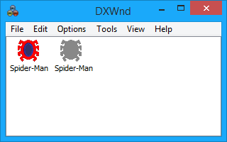
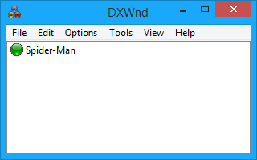
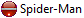

DxWnd comes with a simple graphical interface. The initial view is shown below:

NOTE: When Dxwnd starts you may not see all the options that are covered in this manual. This is because by default Dxwnd does not have "Expert mode" enabled (Options>Expert mode).
The main window shows the list of hooked programs. DxWnd can currently handle up to 256. Trying to add more than that will produce an error message. Keep in mind that DxWnd bundles contain an export subfolder where all supported games have their own default configuration ready to be imported, but, because of the program's absolute path value, these entries will actually work only after updating the path with the proper local value.
By default Dxwnd now shows the actual program icons instead of the indicator icons of previous releases. Active program has a 32bit or 16 color icon (32bit icons can be selected from the global settings). If the exe path is not valid the icon will be grayed out as shown in the picture.
If you select the detailed view (list>detail) each configuration line includes an icon with the program's status, color-coded as follows:

|
blank icon: the program's given path cannot be found and the entry won't work until the path is corrected. |
|
|
gray icon: the hook is not enabled: this program can be activated by the DxWnd menu, but won't be windowed. |
|
|
green icon: the hook is enabled and the program will be windowed when run from the DxWnd interface or from its normal executable or shortcut. |
|
|
yellow icon: the program requires code injection, so it will need to be activated from the DxWnd interface only. |
|
|
 |
red-white bar icon: Entries that must be configured but should NOT be run by the user interface, typically son processes run by hooked frontends. |
You can activate commands via the top menu or by right-clicking on a row in the application list.
DxWnd is also able to operate iconized in the System Tray, where it shows its state (either IDLE, READY or RUNNING) and runs a few useful commands.
DxWnd detects video settings when it is started, and compares them to the current value after killing a task or terminating itself. If it finds differences, it asks whether you want to restore the previous screen setting. This is quite useful to handle all the games that terminate without restoring the previous setting, as may happen when they die abnormally.